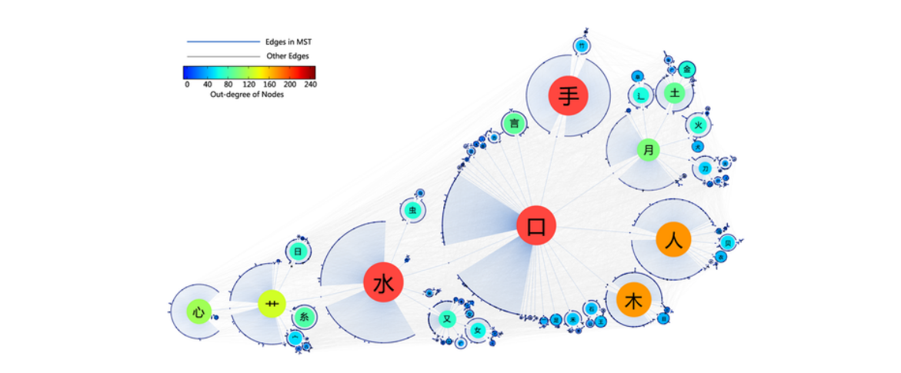

基于知识系统分析的学习策略研究
作者：Xiaoyong Yan, Ying Fan, Zengru Di, Shlomo Havlin, Jinshan Wu类型：文章年份：Plos One, 8(8): e69745, 2013
导语：
汉字是有结构的，实际上，汉字的结构已经进入到了汉语的学习中，例如，我们总是先学习“木”，再学习“林”和“森”，但这些应用通常仅仅局限于个别的汉字，是局域的。现代复杂网络分析方法的发展，使我们可以建立汉字之间的关联网络，从整体上思考更好的汉语学习策略。
本文发表后，得到了BBC Future栏目的评述：A better way to learn Chinese?
 Emerging Educational Technologies and Research Directions本文结合New Media Consortium's 2011 Horizon Report和美国国家自然科学基金关于关于教育技术研究路线图两份报告
Emerging Educational Technologies and Research Directions本文结合New Media Consortium's 2011 Horizon Report和美国国家自然科学基金关于关于教育技术研究路线图两份报告 信息技术下新的教育形态与社会经济之间的关系MOOCs课程等在线教育形态和模式的发展，极大地改变了教育形态，除了教与学的变革，新的教育模式从宏观上与社会经济之间的相互影响也是教育研究应该关注的问题。
信息技术下新的教育形态与社会经济之间的关系MOOCs课程等在线教育形态和模式的发展，极大地改变了教育形态，除了教与学的变革，新的教育模式从宏观上与社会经济之间的相互影响也是教育研究应该关注的问题。